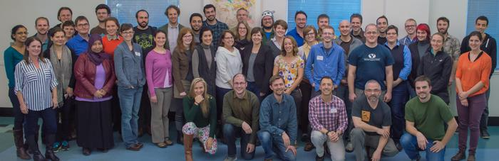

Instructor Training at UC Davis
On Tuesday and Wednesday of last week, we ran a live instructor training class at UC Davis. Over 40 people from all across the country got a lightning introduction to the basics of educational psychology and instructional design, and had a chance to hear how and what we teach.
This is the fifth time we've run instructor training this way. The curriculum and schedule have improved a lot (see the bottom of this post), but still need more work:
-
We should ask attendees to look through our lessons and pick out one or two to use for sample teaching before the start of the training.
-
Everyone doing instructor training must have lots of first-hand experience teaching actual workshops to draw on.
-
We have to make sure the space is suitable for many groups of three to record one another. (There wasn't quite as much audio interference this time as there was at the University of Washington, but it was still quite difficult for some people to hear their partners.)
-
We were more organized both mornings than either afternoon. This was only partly fatigue; as mentioned above, our curriculum and schedule still need some work.
-
We need to do a better job of connecting the theory about lesson design with the practice of teaching Software Carpentry. What that actually means is upgrading our lessons: it's still clear that I wrote many parts of our current material before I really understood this stuff myself.
Those criticisms don't detract from the fact that this session went really well: feedback at the end was largely positive, and several of the participants are already lined up to teach in the coming months. 99 people are currently registered to start instructor training online in February; I think that what we've learned from the live courses will improve their experience considerably.

My thanks to Titus Brown for hosting us, to Tracy Teal, Aleksandra Pawlik, and Bill Mills for helping to teach, and to Warren Code for helping us improve this training in so many ways. Thanks also to Olga Botvinnik for the photograph of our class.
| Day 1 | the art of introducing yourself |
| the differences between novices, competent practitioners, and experts | |
| concept maps | |
| demonstration lesson | |
| how to give feedback | |
| motivation and demotivation | |
| some history and teaching tips | |
| Day 2 | formative vs. summative assessment |
| reverse instructional design | |
| peer instruction | |
| reading list | |
| setting up a workshop website | |
| massive open collaborative lesson development | |
| introducing related projects | |
| next steps (mechanics of qualifying as an instructor) |